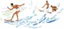

<html>
<!--Generated by Angelfire: L05S00-->
<head>
<title></title>
</head>
<body bgcolor="#000000" background="images/space.jpg"
 text="#fff5ee" link="#000000" alink="#000000" vlink="#000000"><!--'"</title></head>-->

<basefont size="4">

<table border="0" cellpadding="0" cellspacing="0">
<tr><td>
<!--Freetext--><center></center><embed src="images/chariots.mid" align="right" autoload="true" autostart="true" loop="true" height="40" width="100"><br>
<p><p><table width="85%" align="center"><tr><td>

<font face="helvetica, arial, verdana" color="#d8bfd8"  size="4"> Ira wrote in his journal -<p> 
<h3>"Follow My Song"</h3>
My guitar is my best friend. Allies to keep me company when
I'm alone in the massive world. Let them think what they want to
but don't you change to how
they want you. Be your own person since
only yourself knows. Find the beautiful world that you are
looking for. I will help you along the way,
only when in need
and only when you can begin
to change. The life we live is only done
once,
so the way you choose should 
contain some thought.
Do you ever feel like an angel 
that has already experienced heaven,
sent upon the Earth to help
someone's burden?
I hope we all feel that we
are doing good for others -
feeding wood to the fires -
mine and yours.</font><P></table></tr></td><p><!--EndFreetext-->
<p>

</td></tr>

<tr><td valign="top">
<!--ImageGroup-->

<font size="5"></font>
<p>
<!--Freetext--><table width="90%" align="center"><tr><td><font size="5">As a young child, Ira enjoyed tree climbing, soccer, baseball, football, bodyboarding, and creating stress for those around him.  He was a tough little kid who never felt sorry for himself.<br>
</table></tr></td><br><table align="center" width="90%bgcolor="#FFE9B3"><tr><td>
<table align="center" width="95%" bgcolor="#FFFFFF"  background="images/greybackground.jpg"><tr><td>
<FONT COLOR="#800000">
<BLOCKQUOTE>The following is a letter written to Ira's Grandparents by one of Ira's friends following his passing:<p> Dear Mr. & Mrs. Morihara, <br>  
I just wanted to tell you how great a grandson that you had in Ira.  It has been really hard for me to deal with this tremendous loss because of how great a person Ira was.  Floods of memories filled my head when my mother came up to tell me the news.  I have never wept so hard in my entire life.  This is because of how good a friend Ira was to me as well as everyone around him.  I'm glad to have all of these memories of Ira because all of them are good.  I don't ever remember having a bad time when Ira was around.  He was never negative about anything and he always made everyone around him feel good about themselves.  When I heard the news I could not understand that the world seemed to continue functioning when it had lost one of it's best. I know that he is in heaven watching down over us and that gives me comfort.  I remember having so much fun at baseball practice and running around the lake at Coach Danny's house.  It wasn't fun because it was baseball practice but because Ira made it fun with his laugh or comments.  Those are some of the best memories I have and I will cherish for the rest of my life.  I remember picking him up for practice and having grandma tell him to be good and he would just smile.  He always listened to grandma and was good to everyone around him.  He made me feel good when we were both on all-stars and I never got to play.  He wouldn't let me get down on myself and he always encouraged me.  I know that he has affected many other people in this way even though he only lived for a short while.  He lived life to the fullest and accomplished the most in the time he had.  It was great to see Ira last summer and get to spend some time at the beach with him.  Even though I had not seen him in a while, it seemed as though no time had passed since I had seen him before.  I did not know that he was even home when I was there and we seemed to meet by accident as I drove past him jogging.  I yelled to him and met him in the beach parking lot.  We exchanged stories and planned to go to the beach late in the week.  We finally went surfing and in style.  It was comical to see two guys of our age pulling up to the beach in a Cadillac that day I'm sure.  He put it in the shade knowing how much grandpa liked that car.  We paddled out and the waves were big.  I went outside and was a little scared.  Ira motivated me to take some waves and I did.  He was not even worried a little about the size of the waves as he seemed to catch every one that came his way.  We had a good plate lunch after surfing and then he took me home.  We did not meet by accident that day when he was jogging; it was God's way of reuniting friends for the last time.  I'm glad he did, because I was able to see my great friend again.  I just wanted you to know how great a grandson you had in Ira and that he made the lives of so many around him better as a result of his positive attitude.  I mentioned that he was not afraid of big waves when we went surfing, because this really was how he lived his life.  It seemed he had no fear of anything.  He was ready to stand up against anything this world had to offer him with God's help, even death.  I will be praying for your family as well as everyone else who has been fortunate enough to have known the great Ira Morihara.  God bless,</TABLE></TR></TD>
<table align="center" width="90%" border="4"  bgcolor="#000000"> <tr><td>
<blockquote><font="helvetica/arial/sans sarif" color="#f5deb3">
Ira's favorite number is "23". Here is a note from his high school baseball team:<br> 

"On the baseball field or off, Ira was always the same - whatever happened he never seemed discouraged. He kept moving forward and working to achieve his goals, whatever they were. <p>

Ira was admired by his teammates. On the field he never complained. Whenever the coaches made us run, most players whined, but Ira was consistently the first one to line up at home plate. You could tell the difference between Ira and the rest because Ira was the guy always giving it 110% and going hard every time, working to improve his game and help our team. He gave us confidence, encouragement and the ideal example to follow. We'll miss Ira and we are thankful for the chance to have known such a person. <p>

Number 23 is love and will always be remembered by the Kalaheo Baseball Team as an outstanding ball player and a great friend." <br>
<center></center><br>
Here is a note from one of Ira's baseball coaches:<p> 

"I had the privilege of coaching Ira in baseball during his 11th through 15th years. He was a skilled ballplayer who made the all-star teams as a catcher in each of those five seasons.<p> 

The thing I remember most about Ira is that he was disciplined, well behaved, humble and just a joy to coach. Even at that early age you just knew he would be a winner in everything he pursued. I have some distinct memories of Ira. One, is his classic "poke-hit", being a line drive right up the "box". He always seemed to come through when we needed the crucial base hit. Second, was the way he would signal the defensive play to the infielder with his hand to the helmet, chest and belly on a "man on 1st & 3rd base" situation. We were not always successful but we ALWAYS had the confidence that the play would be properly executed. Third, was the game in which Ira was on the receiving end of a violent collision at home plate. Ira's front teeth were knocked loose but he did not shed a tear, complain, or become upset. He was forced to sit out the remeinder of the game but he stayed in the dugout cheering on his teammates. Finally, the distinct and mischievous smile that he always seemed to have on his face. If you did not know any better you would think he was up to something. Like the time they were trying to douse me with water after the last game of the season. I will never forget that smile.<p> 

It had been several years since I had seen Ira on a daily basis but whenever we would see him he would always stop and chat. Those moments made all those years of coaching worthwhile. You just knew that he appreciated it. The last time I saw Ira he was working a 7-Eleven during summer vacation. I do not recall specifically what we talked about but I will never, ever forget that smile. <p>

When I first heard that Ira had passed away I felt cheated because I knew we had lost one of Hawaii's finest sons. He would have surely grown up to be an upstanding member of our state and would have given back to the community by coaching the many sports in which he excelled. Then I thought, just as we chose the best players for our all-star team, heaven must have needed an all-star. <p>

Ira, thank you for being a part of my life and the things that you've taught me. I will never forget you." Coach D.</font></blockquote> 
</table></td></tr>
<table align="center" width="90%" bgcolor="#FFFFFF"  background="images/greybackground.jpg"><tr><td>
<font color="#008008">
<blockquote>Here is a letter with a story from one of Ira's friends written to his Grandparents: <p>
Dear Ira's Grandparents, <p>

I can only imagine how hard this must be for you.  As I'm sure Ira was as close to the both of you as he was his parents, if not more.  I am also very close to my grandparents, in fact they are very much like a second set of parents to me.  So the pain is not that hard for me to imageine.  I just hope that you both feel the condolence of God's Love.  Ira was by no means cheated of a good life.  He was an inspiration, a model of what a good person is all about.  He was loving, generous and one of the most courageous people I know.  I know that you probably already knew this, being that he lived with you guys.  It is so hard to believe that someone so strong could be taken so fast.  I probably won't really understand the reality of the situation for a while.  My greatest sympathy goes out to the both of you, as do my prayers. <p>
I just wanted to tell a story or two about some memories I shared with Ira.  The first that comes to mind is a trip that Ira, Oliver, Barret, and myself took to Baja one afternoon.  When we got there it (the waves) was surprisingly bigger than we expected.  So we contemplated on where to go out.  Before we could even decide where to get in the water Ira was paddling straight out thinking that was what the rest of us had decided.  Well as it turned out the rest of us walked way down the beach to where the paddle wasn't so difficult.  This was probably a hundred yards away.  As it always seems to go with people like Ira, by the time we walked down the beach and paddled out, Ira had already caught a wave and was paddling back out, at the same spot as us.  Not only had he done this somewhat heroic act, but he was on a surfboard, and I'm sure you know Ira is actually a bodyboarder.  The whole time we surfed I couldn't get over how much courage he had.  He would wait until the biggest waves would come and then take off so late that even an experienced surfer would have trouble making the wave.  Ira was like that though, he never let anything inhibit his heartfelt attempt at every challenge.  He, unlike 99% of this world did not let fear change the way he lived, and for this I will always admire and respect him.  Ira is one of the most honorable people I have ever known.  He is the kind of person that is never too good to help someone out, a heck of a lot can be learned from him, as I'm sure will be.  So once again I send my deepest feelings of sympathy to you both, and I pray that God would help you through such a difficult expericence.  Ira's Friend,</blockquote>
</table></td></tr>
<table align="center" width="90%" background="images/lightbluebackground.jpg"><tr><td>
<blockquote><font color="#00048b">
This letter was written to Ira's Grandmother: <p>
Dear Ira's Grandma: 
I met Ira at the beginning of last year.  We became good friends easily.  We would play soccer, and surf together all the time.  After leaving my family and friends behind and coming to school, Ira was one of my most solid friends.  He was so content and had such a positive, mellow attitude towards everything that it made a new life at school for me a lot easier and a lot happier.  In talking with and watching my friends, they noticed the same strength and happiness in Ira.  He touched all of our lives and brought us closer together.<p><br>The night before the accident I saw Ira and __ playing tennis.  They had already worked out and played basketball.  I asked them if they wanted to play beach volleyball and they did.  We played until dark, laughing and playing hard with __, __, __, and I.Then we went and ate at the cafeteria.  We had such a great time.<p>  The next evening I stopped by Ira's room on the way to the cafeteria.  Ira was his usual happy self.  Then we started to skate down the hill and the accident happened.<p>
I still don't know exactly what happened or why, but I somehow know that Ira had reached a place in life that none of my friends had.  Our friend __ said that Ira was like a flower that had fully blossomed.  We had a big circle ceremony with all the people that knew Ira.  Many whom I had never met.  Each told of their stories and thoughts and the impact Ira had made in their life.  It seemed Ira's warm heart and contentedness had touched so many people so deeply.  I think there are few people who have done so much good to so many people in such a short time.  Ira died with no enemies.  I could not think of one person who disliked him, and that is something amazing.  I will miss him, and always remember the fun we had, the things he taught me, and his good and happy soul.  I thank you as his Grandma for helping to mold such a beautiful person, that I got to know in my life. <p>
Thank you for writing and please keep in touch.
Love,.</bLOCKQUOTE></FONT></TABLE></TR></TD><P>
<p>
<table align="center" width="90%" bgcolor="#FFE9B3"><tr><td><P>
<table align="center" width="95%" bgcolor="#F08080"><tr><td>
<FONT COLOR="#800000">
<BLOCKQUOTE>
The following was written by Ira about himself:  "I was born in Germany on August 3, 1979.  My mom and dad divorced when I was eight on Maui.  After a year of living with only my Mom, my older brother and I moved to Kailua to live with our Grandparents.  I was a bad student.  I got C's and D's in all my classes except mathematics in which I would get A's. <p>
After moving to Kailua, my grandma got my brother and me into a very good habit of doing our schoolwork.  We began to get excellent grades in school and I even made it into the "Talented and Gifted" programs...<p>
My goal in life is to be a successful person and to be happy and content with what I did with my life..." <p>
After visiting with Ira's friends, classmates, and professors at the University of San Diego and at the hospital during the week of Ira's passing, I have come to believe that Ira succeeded.  I was told by many that Ira was special.  His smile, his jokes, his help with the dreaded math homework made life more enjoyable to those around him.  He never spoke poorly of anyone or of life, and, he never wasted time feeling sorry for himself or being fearful.  <p>
The more I learn about Ira's deeds, the more of an inspiration he has become to me.  In the end, at 19 years of age, Ira was successful.  I believe we love Ira as much as he loves us.<P></td></tr></TABLE><center>
<a href="ira3.html">CLICK FOR "NUMBER 23" (SOCCER PHOTOS)</a><p>
<a href="index.html">RETURN TO HOME PAGE & ANGEL PAGE</a>
</bLOCKQUOTE></FONT></TD></TR></TABLE>


<!--EndFreetext-->
<!--EndImageGroup-->
</td></tr>

<tr><td valign="top">
<!--ImageGroup-->
<font size="3"></font>
<p>
<!--Freetext--><center>Email Ira's father<a href="mailto:dkmorihara@yahoo.com"></a>
</center>
<!--EndFreetext-->
<!--EndImageGroup-->
</td></tr>

</table>

</body>
</html>
